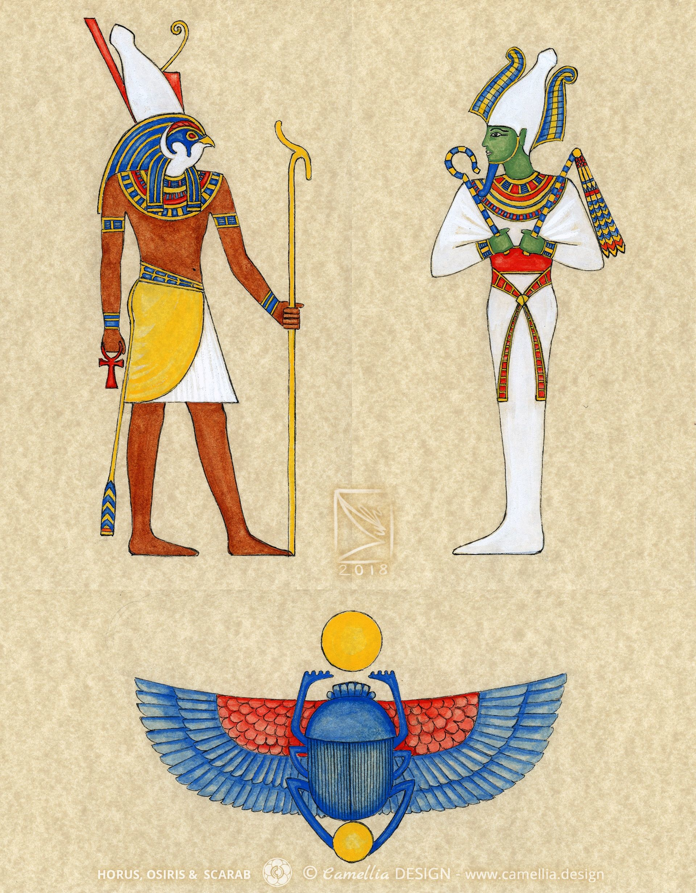
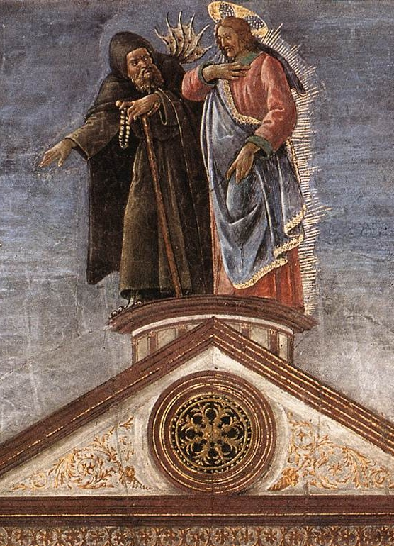
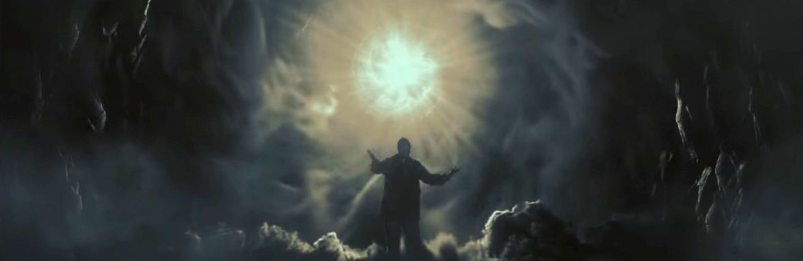

The journey into the underworld: Act Two of the Heathers Archetypal Analysis

Prelude (Reprise)
The monomyth is a mythological theory that can be found in all legends and stories, regardless of medium, century or culture. It is the fundamental hero story, being comprised of 3 parts: Departure, Initiation, and Return. This further breaks down into milestones and events, a few of them being the initial call, the journey into the belly of the whale, atonement with the father, achieving the ultimate boon, being rescued from without and becoming master of the two worlds.
Explaining the entirety of Jungian psychology in a few paragraphs is a task beyond imagination. Instead, I will focus on only the concepts most important to this analysis, with the disclaimer that there is much more to the story than it might seem. In the Jungian view, Order represents the known and Chaos the unknown; the integration of both is a prerequisite for individuation. Archetypes are not merely recurring characters but the primordial structural elements of the human psyche. They exist within the collective unconscious, a shared reservoir of ancestral experiences. The fool/hero (the one most in focus for this essay) is fundamentally the one who can thread the line between these two, the fool unknowingly, the hero knowingly. Another attribute of the here (that is extremely relevant) is his wisdom regarding the two extremes, and sharing the knowledge found in a digestible form for everyone.
These elements are present in any story in differing degrees of clarity and complexity. When somebody writes a story, they are not usually consciously considering all of this, because these elements are intrinsic to stories, and it is one of the things that fascinates us about them. In that same vein, I am not implying that the playwrights of Heathers though of the Egyptian creation myth, simply that they are the same story on a fundamental level.

Because I will be referencing it a lot lets walk through the Egyptian myth of creation. Osiris, the first King and God is usurped and attacked by his brother Seth after growing blind. Seth dismembers the King, scattering his pieces across the land. The goddess of nature gives birth to Horus, using a piece of Osiris tasking him to avenge his father. Horus engages Seth in a battle where he loses his eye and flees. Before the final confrontation, Horus undertakes a perilous journey into the underworld to visit his father. There, Horus gives his eye to Osiris to revitalize his spirit, not reviving him, granting him the power to rule the dead eternally. Horus returns to the surface, defeats Seth with his newfound wisdom and reclaims the throne of the living.
It is also necessary to delineate the textual boundaries of this analysis. The later additions to the play: You’re Welcome, Never Shut Up Again, and I Say No since they offer agency to characters defined by their lack thereof and weaken the narrative.
The new normal
The story returns to JD and Veronica sometime after the murder: “You were lying to yourself. You wanted them dead too.” Is what some might call a baseless accusation, trying to guilt trip. However, what if JD is right? What if some part of her really did want her colleagues dead. Well then her admitting to this would be the solution, she could kill Duke next and start building paradise, no? Well, this is the 2nd temptation, that of dominion over the world. If she discards her loyalty to what is good, to her own concept of morality, then she could have anything. Our hero rejects this however, maintaining her ultimate goal, however in an imperfect way. Her claim: “No good could possibly come of this” should be correct but isn’t. the truth is something closer to either “no good can come out of this if it became doctrine” (disregarding the specificity) or “no amount of good can overpower the bad of killing two people”.
“Just wait 'till you see the good that comes of this” is a showcase of wisdom, similar to the heathers in the first act, recognising a situation not only for what it is, but also for it’s potential. This is something archetypical to the rigidity of the heathers compared to JD’s entropy: seeing things for more than the surface, for what they really are respectively for what they could be. Both are signs of wisdom, and both are necessary.
Dead gay son proves that point perfectly, the death of a few leading to the rejuvenation of many. It is similar to “the me inside of me” in the aspect of martyrisation of victims. However, JD attributes the destruction as a necessary prerequisite for this reformation, and keeps running with the idea, wanting to continue the murders.
Seventeen can be seen as Veronica’s last attempt to talk JD out of the killings, testing the idea that if their love is really God, she would choose her over making the world better. she still hopes she doesn’t have to go through the change necessary to do good (breaking up, confrontation, etc). Seventeen also plays into the earlier trope of trying to put the genie back in the lamp.
“Well, fuck me gently with a chainsaw! (…)I am in love with this fat girl.” This is the turning point for Heather C, abandoning her previous role and becoming a voice of wisdom inside Veronica: by her finally seeing Martha as someone with good qualities, she is no longer the oppressor, but the wise king, the father in the underworld aiming for order, proving that while the original state of the school was not good, it did have some good attributes
“Ram was not gay! (..)I'm gonna confront JD” reveals Martha’s flaw. While she is not wrong in theory, she is foolish in her perception, attributing any explanation to preserve her preconceived notions. However right she is, if she were to confront JD, she would be eaten alive by the present, so Veronica decides to sacrifice her relationship with Martha by telling the truth, which is good at least on paper.

“But if we show the ugly parts, / That we hide away, / They turn out to be beautiful,” is as close to a direct reference as we will get to the integration of the shadow according to Jungian psychology. The shadow is that which we consider evil within ourselves, from anger, to sadistic pleasure or jealousy. It is one of the fundamental elements of the Personal Unconscious, and it is something present in everybody (see in part 1: <the line separating good and evil). Hiding it away and hoping it disappears is not a good idea and will not lead anywhere nice. The ego should subordinate the shadow. In other words you must accept the capacity of being a monster, show it to “the light of day”, this being the only way of being a complete Self (capital S).
Lifeboat is an inverted “dead gay son”, showcasing the bad effects of JD’s killing, and the innocence of someone who otherwise might be seen as simply another bad person. The song details the social uncertainty that comes from flux periods, things changing and perhaps a wish they were back to the original state of tyranny. This is similar in thinking to that of the Israelites wanting to go back to tyranny rather than suffer through change (Numbers 14:4) The songs position right between the shine-a-lights is indicative of the integration that the former song represents, accepting your weakness, and the overpowering nature of that same shadow in the latter.
Shine a light reprise is complementary to all of this. If you act foolish and don’t filter your subconscious tells you, taking it at face value, you would end up like Heather M. Shine a Light Reprise also represents a another trial for Veronica, actively stopping a suicide, showing the positive transformation to come, foreshadowing her role as redeemer.
With JD now rejected, he goes and allies himself with Heather, forming the archetypical antagonist: the worst of both worlds, that will force the hero to embody the best. This unholy alliance finalises JD’s degeneration and seals off his possibility of redemption: his alliance with Heather, the one was criticising, shows his true motives: not caring for the good of the innocent, just the killing of the guilty.
Martha is another victim of the transition the high school has been going through, adopting the same longing for the past,however drawn out to it’s absolute conclusion: the Mephistophelian belief that existence is fundamentally worse than nothingness: “as good as if things never had begun (…) I’d rather have Eternal Emptiness”. Martha’s claim is that if the only time I felt love was in kindergarten, that means she will never feel love again. “But I believe that any dream worth having,/ Is a dream that should not have to end”. Just like when in blue we were shown some of the merits of the tyrant Heather C was, now we see some of the merits of the untamed beasts Kurt and Ram were: in big fun where Ram tells Martha to stop acting weird, he is giving pertinent advice, be it not for the reason he thinks he does. This is the Jocks’ merit: being so unintelligent they reach a certain level of wisdom, not thought but innate.
Journey into the underworld
One of, if not the most famous archetype in literature is the journey into the underworld. The act of dying and being reborn is the final trial of the hero, burning away their old self to become anew. This is the fundamental trope “Yo girl” and “Meant to be Yours” represent.
Yo girl represents Veronica’s reaction on everything happening over the last few songs and her getting her affairs in order. Instead of accepting everything that happened- “keep it together”, staying calm and content- which would make her “truly a Heather”, she goes to the hospital to see Martha. This is her accepting: what I did before was bad, but I will attempt to fix it now. One of the following lines, “Still you've earned that red scrunchie, Come join Heather in hell” plays a dual role, as a synthesis of everything happening in the song, and as a prophecy, foretelling her descend into the underworld, and her seizing of the symbol of power.
Examined closely, joining Heather in hell can be read in 3 distinct ways, each specific to a Heather. Joining Chandler would mean her death and going to literal hell. McNamara hell to join is the fear of being oppressed, the turmoil that is the high school. Duke presents what might be the most damning hell of all, that of being another usurper. To join her in hell would mean either ruling alongside her, or dethroning her, but not being any better, just a different face ruling.*
The red scrunchie here plays the role of either a crown or a golden bough, both in form and essence. It is a metonymy for the power and the sacred duty of ruling the high school, but also something physical put on the ruler’s head, the spot most visible, drawing attention due to its bright colour and rarity, very much like a crown. Another reason the scrunchie is reminding of Heathers fate. With this, the line could also refer to what Veronica has to do, visit the past ruler in the underworld to ensure she avoids the past’s mistakes, to make sure she earns it in a sense, making sure she avoids the past’s mistakes.
Next up we see JD’s incorporation of Veronica’s talent, twisting the truth through forgery: “He's got your handwriting down cold”. Keep in mind this is the same JD that beat both Kurt and Ram and the Heathers at their own games respectively, he is adept at understanding and picking up other people’s specialties. This draws attention to evils nature of not being able to create anything new, just copy and twist what already exists (“Diabolus est simia Dei”).
Following this, Meant to be yours shows JD as the devil, believing he is above everything, God in person. He begins by casting Veronica as a sinner and someone deserving of punishment (“For that you should be dead,”) before forgiving her (“but but but”) and deciding the world itself is wrong. JD wanting to set Veronica free whilst he himself was broken not too long ago is heavily evocative of notes from the underground, both in the god complex and the absolute nature of the characters. His repeated mentions of fate (“meant to be”, “Let's guarantee” “I am all that you need”) emphasise his perceived absolute control over being, that as long as Veronica is at his side he is unstoppable (“I can't make it alone. Finish what we've begun.”).

“Veronica, open the door! Veronica, can we not fight anymore, please? (…) Veronica is hanging from an improvised bed sheet noose” finally this is the 3rd temptation of Crist, that of not jumping off the temple, or in this case faking the jump. This illustrates her ability of deception, using the same charade used for evil before for good. This is the point Veronica starts accepting her mistakes and instead of hiding them away, understanding them. This faked suicide is the descent into her underworld, joining Heather in hell as it makes her abandon everything she was.
Her mother being the one to find her in this state is representing her rebirth, no longer being the fool, but the hero with perfected wisdom. She is ready to confront the adversary, no matter the cost and sets out into the unknown again, this time in full knowledge. (hence the “When will you be back? That's a good question.”)

The Hero
With Veronica’s transformation complete, she is left to clear her mistakes and save Westenburg. Veronica is yet again placed in the stance of “a dead girl walking”, this time being thought of to be dead. She takes accountability for her mistakes and accepts any consequences that might come: “I let his anger fester and infect me. No one here deserves to die. Except for me and the monster I created.” The chants of the students are an interesting and can be interpreted as a retelling of Veronica’s story, similar to a ballad, ending with the reference of hell, her apotheosis.
The confrontation between the two goes as we would expect, Veronica pleading with him one final time, then battling and defeating him. One thing of note is that regardless of how insane JD acts, he still maintains an element of respect towards her, accepting his defeat “Cause you beat me fair and square”
The line “You look like hell. / I just got back.” Is the point where the Veronica re-enters the familiar world and now has to use her wisdom to reform the broken remnants (“brand new sheriff's come to town”). This is the point where she starts addressing problems, one by one in a rapid-fire flash of enlightened intellect. She pays back her debt to Martha, showing her compassion(Martha, are you free tonight?), while still not becoming ignorant (“can't promise no more Heathers”), counters Martha’s dilemma in one statement (“if no one loves me now, Someday somebody will”), identifies the utility in something as primitive as partying and “big fun” (“Take off our clothes and dance, (…) Cause this could be our final chance”), and acknowledge the death of her peers, while honouring their legacy (“Maybe we won't grow old, And maybe then we'll never die!”). this is the hero as world redeemer, having touched both absolutes, having completed her journey now possessing the answers.
The play ends with the chanting beautiful, the same word the first song used to describe the past, but now describing the future.
* This is in a way the 4th temptation that Veronica faces, “To do the right deed for the wrong reason.” as thought of by T. S. Eliot, and the implicit fear that there is no way to end the tyranny even if she would bring down Heather. Reciprocally, this is all the more reason why J.D.’s plan wouldn’t work.
Refrences/Bibliography